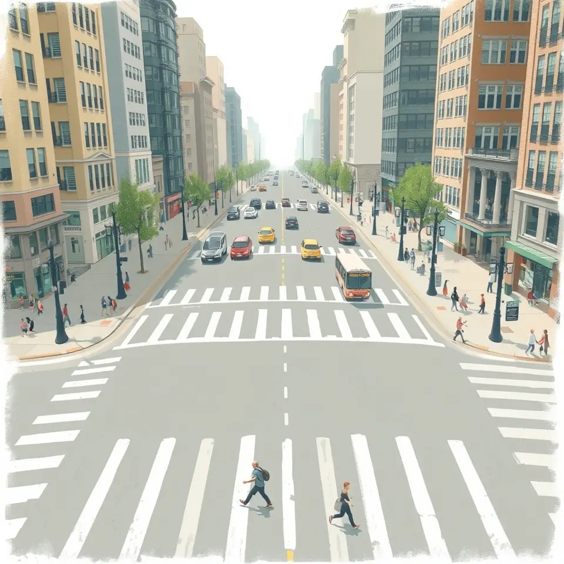

사회
[내일날씨] 동해안·경상권 비 소식…강원 높은 산지에 눈
 AI 이미지
AI 이미지2027 수능 50일 앞두고 입시전문가 실수 줄이기 조언
입시전문가들은 2027학년도 수능을 앞두고 실전 모의고사와 오답노트 중심 학습을 강조했다.

2027학년도 수능 11월 19일 시행…가채점표 도입·반입금지 확대
2027학년도 수능은 11월 19일 시행되며, 수험표 뒷면 가채점표 제공과 통신기기 반입 금지 확대가 달라진다.

한동훈·최민희, 이재명·윤석열 재판 두고 설전
최민희 의원의 발언을 두고 한동훈 의원과 최 의원이 대통령 재판과 전 대통령 재판의 차이를 놓고 공방을 벌였다.
민주당, 대법에 한덕수 상고심 신속 선고 촉구
민주당이 한덕수 전 총리 구속기간 만료를 앞두고 대법원에 신속한 선고를 요구했다.
배우 고경표, 음주운전 사고…소속사 “깊이 반성”
배우 고경표가 만취 상태로 승용차를 몰다 청소차를 들이받아 경찰이 음주운전 혐의로 조사 중이다.
배우 고경표, 음주사고로 경찰 조사
배우 고경표가 만취 상태로 운전하다 청소차를 들이받아 음주운전 혐의로 조사를 받고 있다.

주말 가을비 확대…일요일 맑아도 바다 물결 높아
14일 전국에 가을비가 내리고 수능일에는 영하권 아침 추위가 예보됐다.
살아 있는 친구 영정사진 합성 놀이 확산…제재 목소리
SNS에서 살아 있는 친구의 사진을 AI로 영정사진처럼 꾸미는 놀이가 퍼지며 전문가들이 플랫폼 차원의 제재를 촉구하고 있다.
이 대통령 국정지지율 39%…민주 39%·국힘 26%
한국갤럽 조사에서 이 대통령 직무 긍정 평가는 39%, 부정 평가는 50%로 집계됐다.

전국 흐린 날씨 속 토요일 새벽부터 비, 수도권 최고 10mm
토요일 새벽부터 전국에 비가 내리고 수도권에는 최고 10mm의 강수가 예보됐다.

재선충병 피해 확산 속 산불 우려…지자체 방제 강화
소나무재선충병 피해가 늘어난 산에서 산불 우려가 커지며 방제 대응이 강화되고 있다.
쇠사슬 학대 3개월 만에 재발…장애 청소년 숨져
쇠사슬 학대 사건이 3개월 만에 다시 발생해 장애 청소년이 숨진 것으로 알려졌다.
천안서 발달장애 청소년 숨져…40대 친모 긴급체포
천안에서 발달장애 청소년이 숨져 40대 친모가 긴급체포됐다.
통일교 관련 최민희 녹취록 추가 파장, 여권 갈등 확대
최민희 의원의 추가 녹취록 공개 이후 통일교 의혹과 여당 내 계파 갈등이 함께 불거졌다.
이용철 법무장관 후보, 과거 일가족 살해 사건 변호
이용철 법무장관 후보자가 과거 양평 일가족 살해 사건의 변호인단에 포함됐던 것으로 보도됐다.
반포 아파트 부정청약 의혹 이혜훈 전 의원 송치
경찰이 반포 아파트 부정청약 의혹을 받는 이혜훈 전 의원을 송치했다.
성북 10대 여성 살해 사건 50대 남성 구속
성북구에서 발생한 10대 여성 살해 사건의 피의자가 구속됐다.

대구시, 이웃사랑 김장 나눔 행사 개최
대구시가 2026년 이웃사랑 김장 나눔 및 농특산물 직거래 행사를 연다는 소식이다.

윤석열, 내란 존속 주장에 반박…첫 공판서 혐의 부인
윤석열 전 대통령이 계엄 해제 이후 내란 존속이라는 종합특검 주장에 반박했다.
경북, 철도망 확충으로 지역소멸 대응 나선다
경북도가 철도망 확충을 통해 지역소멸에 대응하고 재도약을 추진한다고 밝혔다.

AI 이미지생후 19개월 딸 방임 사망 친모, 항소심도 징역 12년
생후 19개월 딸을 영양결핍으로 숨지게 한 친모에게 항소심에서도 징역 12년이 선고됐다.
성북구 10대 여성 살해 사건, 50대 남성 구속영장 발부
성북구 10대 여성 살해 사건의 50대 피의자에게 구속영장이 발부됐고, 관련자들에게도 영장이 청구됐다.
내란 특검, 대법원에 한덕수 조건부 보석 요청…“소재 파악 어려울 수 있어”
내란 특검이 한덕수 씨의 조건부 보석을 대법원에 요청했다.
경찰, ‘로또 청약’ 이혜훈 전 의원 사기 혐의 공소청 송치
경찰이 로또 청약 의혹을 받는 이혜훈 전 의원을 사기 혐의로 송치했다.

서영교 한덕수 석방 시 내란 가능성 주장
서영교 의원이 한덕수 석방 시 추가 내란 우려가 있다며 조희대 대법원장 탄핵 사유를 거론했다.
내란 특검, 대법원에 “한덕수 구속 만료 전 조건부 보석” 요청
내란 특검이 대법원에 한덕수 전 총리의 구속 만료 전 조건부 보석을 요청했다.
이 대통령, 자본시장 정상화 의지 재확인
이 대통령이 자본시장의 신뢰 회복과 정상화를 강조하며 개혁 의지를 밝혔다.
제주부터 비 확대…토요일 밤 대부분 그칠 전망
제주에서 시작된 비가 전국으로 확대되며 토요일 밤에는 대부분 그칠 것으로 보인다.